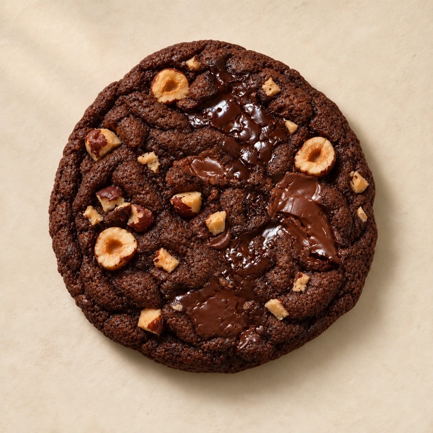

Chocolate hazelnut coffee
A dark cocoa and espresso dough folded with melted Guittard chocolate and toasted hazelnuts.
Grass-fed Kerrygold butter, organic cane sugar, pasture-raised eggs, cocoa, fine espresso, Guittard dark chocolate, toasted hazelnuts
- The silk
- Guittard dark chocolate
- The sugar
- Toasted hazelnuts